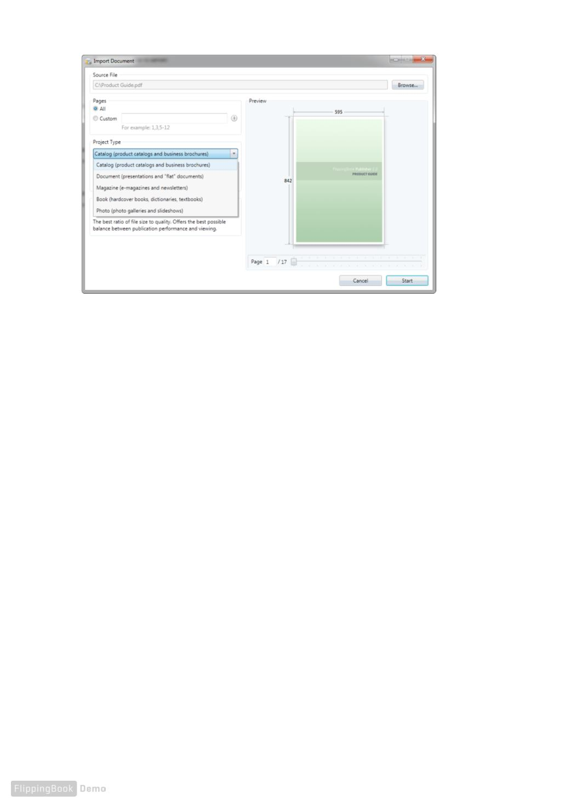

Please note: Choosing the publication type is only available whilst importing PDF "les into a new
project. If users wish to add pages to an existing project, there is no way to adjust the publication
type settings. To change the publication type, users must create a new project.
Settings of PDF "le content extracting
FlippingBook Publisher offers you a really wide range of settings for content extracting. In order to
allow users to set the extraction, we have created different import pro"les, which contain an array
of useful preset functions to allow different users to reach different goals. Users can choose
between the highest quality and the minimal size of a future publication. Users can select the
maximal speed pro"le or use the optimal pro"le, which offers a perfect balance of quality, size and
creation speed.
8
QUICK START